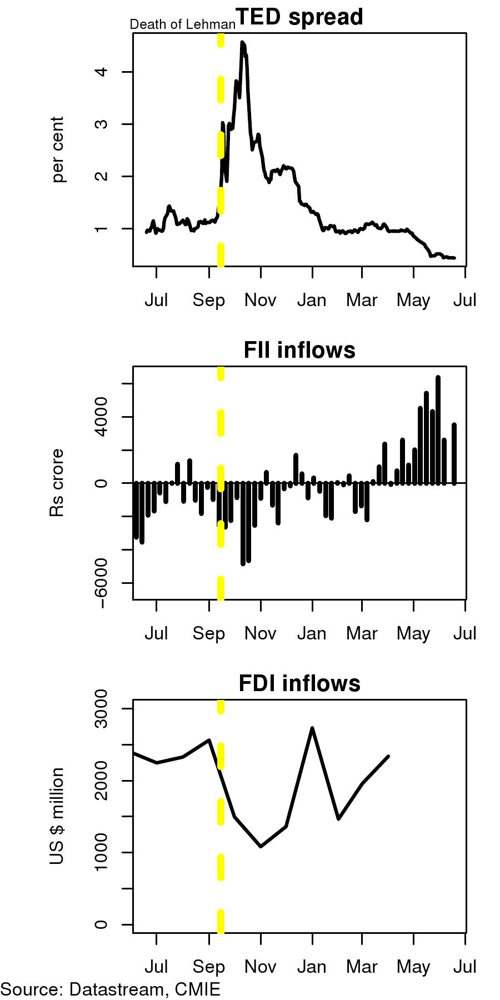

Keep the Rupee rolling
Financial Express, 22 June 2009
Capital flows are returning to India. The revival, after the sudden stop witnessed last year, appears to be strong and sharp. As market conditions in global financial markets have improved, and confidence has returned to markets, India has started witnessing a return to capital flows.
>The TED spread, measuring the spread of the interbank interest rate in the London money market (LIBOR) over and above the US treasury bill rate, measures the confidence market participants have in private players. A higher TED spread indicates a loss of confidence of market participants, and leads to tight liquidity conditions. The figure shows that the TED spread went up sharply when Lehman Brothers went bankrupt in September 2008. Since then, with government intervention and with stability returning to world money markets, the fear that a borrowing bank may default has gone down and the TED spread has declined.
The decline in the TED spread has been accompanied by liquidity returning to global money markets. As the figures for FII inflows to India shows, portfolio investors, who had pulled money out of India, are now bringing money in again. In the current recessionary conditions the world over, India is again emerging as an attractive destination. The figure shows that since April 2009 FII inflows into India have moved back into positive territory.
As money in international financial markets dried up in September 08 we also witnessed a decline in FDI flows. As the figure shows these flows have also revived in recent months.
The return of capital flows to India is going to take us back to the familiar question of the exchange rate policy. Since September we saw the RBI intervening in the foreign exchange market selling dollars to prevent rupee depreciation. With the return of the inflows there could be an argument for intervening in forex markets to prevent appreciation. Two arguments may be made: FIrst, "insurance", that the high level of reserves that India held actually did us good in the crisis. This argument is flawed because the RBI actually used only about USD 34 billion or around 10 percent of the reserves. The rest remained "excess", costly to buy and costly to hold. The second reason for intervening could be to prevent currency appreciation which will hurt exports. This argument ignores the fact that the biggest factor that affects exports is world demand. The real exchange rate matters, but only marginally, and anyway you cannot be a high productive economy and prevent an appreciation of the real exchange rate for very long without depressing domestic consumption and engaging in financial repression. Recent events have highllighted the role of demand very sharply. The depreciating rupee was not able to prevent the sharp decline that we have seen in Indian exports.
Pegging the exchange rate will again lead to a loss of monetary policy independence. The last few months have been months of high flexibility of the rupee dollar rate. This has encouraged market participants, banks and firms to look carefully at currency hedging options. The way forward should be to continue to provide them with more and more transparent and cheaper options to hedge their own risks. A more flexible currency will encourage them to do so. The way forward for a more resilient economy is to have a more flexible currency and the availability of hedging instruments.
Back up to Ila Patnaik's media page
Back up to Ila Patnaik's home page